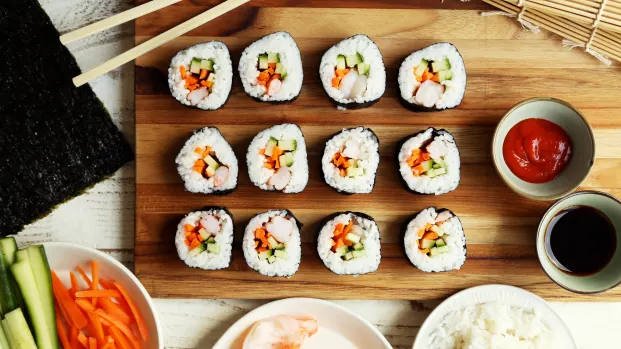
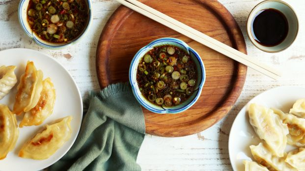
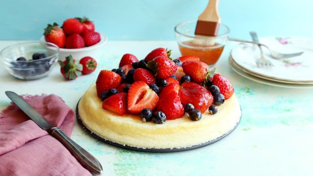

How to Make Makizushi
These are wonderful step-by-step instructions. My family had so much fun rolling and eating sushi tonight and we can't wait to do it again.
Soy-Ginger Dipping Sauce
Had some potstickers in the freezer and so I made this sauce to go alongside with them and it was perfect! Great flavor combination and the best part was that the ingredients were easy to find!
Japanese Cheesecake
Delicious cheesecake! It's like eating clouds, it's so light and fluffy. Just one note, the cheesecake should be left in the oven with the oven turned off after cooking for one hour for best results.